|
|
| hard corals text index | photo index |
| Phylum Cnidaria > Class Anthozoa > Subclass Zoantharia/Hexacorallia > Order Scleractinia > Family Euphylliidae > Euphyllia sp. |
| Brain
anchor coral Euphyllia ancora* Family Euphylliidae updated Nov 2019 Where seen? This hard coral with meandering valleys and long tentacles with U-shaped tips is sometimes seen on our undisturbed Southern shores. Features: The colony appears to be boulder-shaped, those seen 10-20cm or larger. But the colony is not solid (massive). Hidden under the tentacles, the large corallites are branching and form meandering valleys with separate walls (flabello-meandroid). Thus resulting in its common name. There wide, deep gaps between the corallites. The branching corallites, however, are arranged to form an overall spherical shape. But this feature is usually hidden when the polyps' long tentacles are expanded. Tentacles long (2-3cm) with U-shaped tips. Colours seen include blue, green and brown. Tips usually paler. Sometimes confused with other Euphyllia species. Here's more on how to tell apart the Euphyllia species. Status and threats: This coral is listed as globally Vulnerable by the IUCN. Like other creatures of the intertidal zone, they are affected by human activities such as reclamation and pollution. Trampling by careless visitors, and over-collection also have an impact on local populations. |
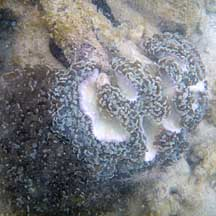 Terumbu Raya, Mar 11 |
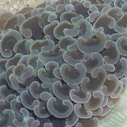 Tentacles with U-shaped tips |
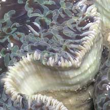 |
 Brain-like meandering valleys. Raffles Lighthouse, Jul 06 |
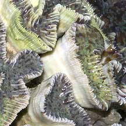 Wide, deep gaps between corallite walls. |
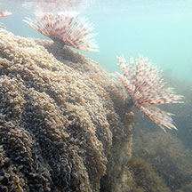 Fanworms in a living colony. Terumbu Raya, Jun 15 |
|
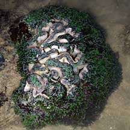 Kusu Island, Aug 08 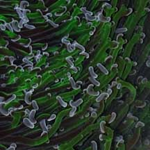 |
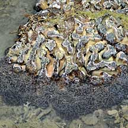 Terumbu Raya, Feb 09 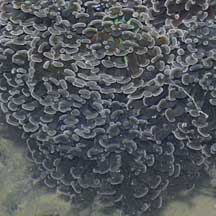 |
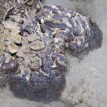 Terumbu Semakau, Mar 11 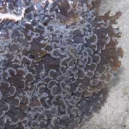 |
*Species are difficult to positively identify without close examination.
On this website, they are grouped by external features for convenience of display.
| Brain anchor corals on Singapore shores |
On wildsingapore
flickr
|
| Other sightings on Singapore shores |
|
Links
References
|